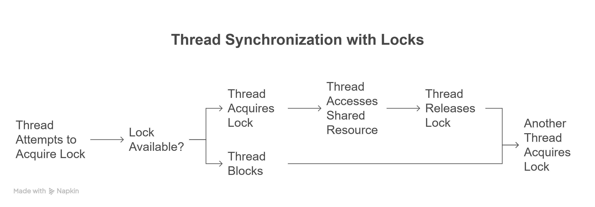
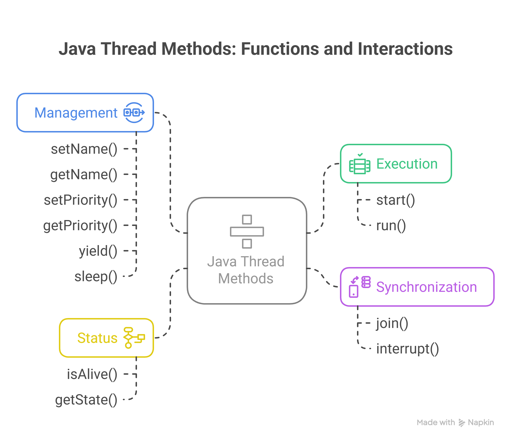

Multi-threading is a programming concept where multiple threads run concurrently within a single process, allowing multiple tasks to be executed simultaneously.
Single-threaded vs Multi-threaded Execution Demo
🚀 Why Do We Need Multi-Threading?
Performance: Parallel execution of tasks
Responsiveness: UI remains responsive during background tasks
Resource Utilization: Better CPU and I/O utilization
Modularity: Logical separation of different tasks
// Example: Without threading (blocking)
public void downloadFiles() {
downloadFile1(); // Blocks until complete
downloadFile2(); // Waits for file1 to finish
downloadFile3(); // Waits for file2 to finish
}
// Example: With threading (concurrent)
public void downloadFilesParallel() {
Thread t1 = new Thread(() -> downloadFile1());
Thread t2 = new Thread(() -> downloadFile2());
Thread t3 = new Thread(() -> downloadFile3());
t1.start(); // All files download
t2.start(); // simultaneously
t3.start();
}
Thread Creation Methods in Java
Method 1: Extending Thread Class
class MyThread extends Thread {
public void run() {
for (int i = 0; i < 5; i++) {
System.out.println("Thread: " + getName() + ", Count: " + i);
try { Thread.sleep(1000); } catch (InterruptedException e) {}
}
}
}
// Usage
MyThread thread1 = new MyThread();
thread1.start();
Method 2: Implementing Runnable Interface
class MyRunnable implements Runnable {
public void run() {
for (int i = 0; i < 5; i++) {
System.out.println("Runnable: " + Thread.currentThread().getName());
try { Thread.sleep(1000); } catch (InterruptedException e) {}
}
}
}
// Usage
Thread thread2 = new Thread(new MyRunnable());
thread2.start();
Method 3: Lambda Expressions (Java 8+)
Thread thread3 = new Thread(() -> {
for (int i = 0; i < 5; i++) {
System.out.println("Lambda Thread: " + i);
try { Thread.sleep(1000); } catch (InterruptedException e) {}
}
});
thread3.start();
WAITING: Thread waiting indefinitely for another thread
TIMED_WAITING: Thread waiting for specified time
TERMINATED: Thread has completed execution
Thread Lifecycle Demo
Thread thread = new Thread(() -> {
try {
Thread.sleep(2000); // TIMED_WAITING
synchronized(lock) {
// Could be BLOCKED if lock not available
wait(); // WAITING
}
} catch (InterruptedException e) {
// Handle interruption
}
}); // NEW
thread.start(); // RUNNABLE -> RUNNING -> TERMINATED
Concurrency Issues
🔴 Race Condition
Multiple threads accessing shared data simultaneously, leading to unpredictable results.
Shared Counter: 0
🔴 Deadlock
Two or more threads waiting for each other indefinitely.
🔴 Starvation
A thread is unable to gain access to shared resources and cannot make progress.
🔴 Livelock
Threads are not blocked but constantly changing states in response to others, making no progress.
// Race Condition Example
class Counter {
private int count = 0;
public void increment() {
count++; // Not atomic! Can cause race condition
}
public int getCount() { return count; }
}
// Deadlock Example
Object lock1 = new Object();
Object lock2 = new Object();
Thread t1 = new Thread(() -> {
synchronized(lock1) {
synchronized(lock2) { /* work */ }
}
});
Thread t2 = new Thread(() -> {
synchronized(lock2) {
synchronized(lock1) { /* work */ } // Deadlock!
}
});
Solutions to Concurrency Issues
✅ Synchronized Methods/Blocks
Ensures only one thread can access critical sections at a time.
public synchronized void increment() {
count++; // Thread-safe now
}
// Or using synchronized block
public void increment() {
synchronized(this) {
count++;
}
}
✅ Atomic Classes
Thread-safe operations without explicit synchronization.
AtomicInteger atomicCounter = new AtomicInteger(0);
public void increment() {
atomicCounter.incrementAndGet(); // Thread-safe atomic operation
}
✅ Locks (ReentrantLock)
More flexible than synchronized with additional features.
private final ReentrantLock lock = new ReentrantLock();
public void increment() {
lock.lock();
try {
count++;
} finally {
lock.unlock();
}
}
Solutions Demo
Synchronized Counter
Value: 0
Atomic Counter
Value: 0
Lock Counter
Value: 0
Synchronization Deep Dive
🔒 Monitor Locks (Intrinsic Locks)
Every object in Java has an intrinsic lock. Synchronized methods/blocks use this lock.
public class BankAccount {
private double balance;
public synchronized void deposit(double amount) {
balance += amount; // Only one thread can execute this
}
public synchronized void withdraw(double amount) {
if (balance >= amount) {
balance -= amount;
}
}
}
🎯 Wait, Notify, NotifyAll
Inter-thread communication using object monitors.
class ProducerConsumer {
private Queue<Integer> queue = new LinkedList<>();
private final int CAPACITY = 5;
public synchronized void produce(int item) throws InterruptedException {
while (queue.size() == CAPACITY) {
wait(); // Release lock and wait
}
queue.offer(item);
notifyAll(); // Notify waiting consumers
}
public synchronized int consume() throws InterruptedException {
while (queue.isEmpty()) {
wait(); // Release lock and wait
}
int item = queue.poll();
notifyAll(); // Notify waiting producers
return item;
}
}
🔧 Advanced Synchronization Tools
Semaphore: Controls access to resources with permits
CountDownLatch: One-time barrier for thread coordination
CyclicBarrier: Reusable barrier for thread synchronization
ReadWriteLock: Separate locks for read and write operations
Producer-Consumer Demo
Queue: []
Size: 0/5
// Semaphore Example
Semaphore semaphore = new Semaphore(3); // Allow 3 concurrent access
public void accessResource() {
try {
semaphore.acquire(); // Get permit
// Use resource
} finally {
semaphore.release(); // Return permit
}
}
// CountDownLatch Example
CountDownLatch latch = new CountDownLatch(3);
// Worker threads
new Thread(() -> {
// Do work
latch.countDown(); // Signal completion
}).start();
latch.await(); // Wait for all workers to complete


start(): Initiates the thread's execution. It creates a new thread and calls the run() method. Crucially, you should never call run() directly.
run(): Contains the code that the thread will execute. This method should be overridden in your Thread subclass or Runnable implementation.
join(): Allows one thread to wait for another thread to complete its execution. The calling thread will block until the target thread finishes.
interrupt(): Sends an interrupt signal to the thread. The thread can choose to respond to the interrupt or ignore it. Often used to stop a thread that is blocked or in a long-running loop.
isAlive(): Returns true if the thread has been started and has not yet died (completed its run() method).
setName(): Assigns a name to the thread, useful for debugging and monitoring.
getName(): Retrieves the name of the thread.
setPriority(): Sets the thread's priority. Thread priority is a hint to the operating system's scheduler, but it's not guaranteed to be honored.
getPriority(): Gets the thread's priority.
getState(): Returns the current state of the thread (e.g., NEW, RUNNABLE, BLOCKED, WAITING, TIMED_WAITING, TERMINATED).
yield(): Suggests to the scheduler that the current thread is willing to relinquish the CPU to another thread. The scheduler is not required to honor this suggestion.
sleep(): Causes the current thread to suspend execution for a specified period of time. The thread enters the TIMED_WAITING state.